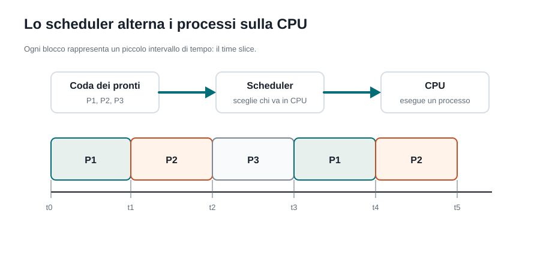
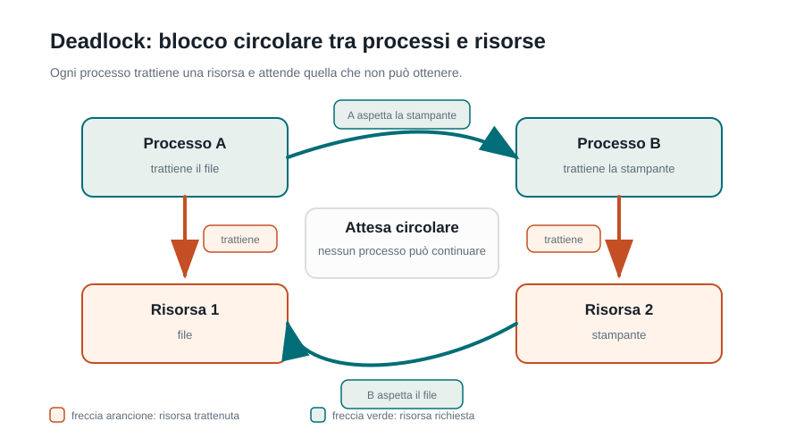

Capitoletto 3
Processi e risorse
Un computer sembra fare molte cose contemporaneamente. In realtà il sistema operativo organizza i programmi in esecuzione, assegna la CPU per piccoli intervalli di tempo e controlla l'accesso alle risorse condivise.
Obiettivi della lezione
- Distinguere programma, processo e thread.
- Descrivere gli stati principali di un processo.
- Spiegare a parole semplici il lavoro dello scheduler.
- Capire perché le risorse condivise possono creare errori.
- Riconoscere race condition, deadlock e starvation.
Programma, processo e thread
Un programma è un insieme di istruzioni salvato in memoria di massa, per esempio un file eseguibile. Un processo è un programma mentre viene eseguito: ha uno spazio di memoria, file aperti, permessi, risorse assegnate e un identificatore. Un thread è un flusso di esecuzione dentro un processo.
| Concetto | Che cos'è | Esempio concreto |
|---|---|---|
| Programma | Codice salvato, fermo sul disco. | Il browser installato sul PC. |
| Processo | Programma caricato e in esecuzione. | Il browser aperto mentre navighi. |
| Thread | Linea di lavoro interna a un processo. | Un thread aggiorna la pagina, uno scarica dati, uno gestisce l'interfaccia. |
Che cosa contiene un processo
Il sistema operativo deve ricordare molte informazioni per ogni processo. Queste informazioni formano una specie di scheda tecnica, spesso chiamata PCB, cioè Process Control Block.
| Informazione | A cosa serve |
|---|---|
| PID | Numero che identifica il processo. |
| Stato | Dice se il processo è pronto, in esecuzione, in attesa o terminato. |
| Program counter | Indica quale istruzione dovrà essere eseguita alla ripresa. |
| Registri della CPU | Permettono di sospendere e riprendere il processo senza perdere il contesto. |
| Memoria assegnata | Contiene codice, dati, stack e heap del processo. |
| File e risorse aperte | Permettono al sistema operativo di sapere cosa il processo sta usando. |
Gli stati di un processo

Un processo non usa sempre la CPU. A volte è pronto ma aspetta il proprio turno; a volte è in esecuzione; a volte si blocca perché attende un dato dal disco, dalla rete, dalla tastiera o da un'altra periferica.
| Stato | Significato | Esempio |
|---|---|---|
| Nuovo | Il processo è appena stato creato. | Doppio clic su un'applicazione. |
| Pronto | Potrebbe usare la CPU, ma attende il turno. | Più programmi aperti competono per il processore. |
| In esecuzione | Sta usando la CPU in questo momento. | Il programma sta calcolando o aggiornando la schermata. |
| In attesa | Aspetta un evento o una risorsa. | Il programma attende dati dalla rete. |
| Terminato | Ha finito e le sue risorse possono essere liberate. | Chiudi l'applicazione. |
Scheduler e time slice
Lo scheduler è la parte del sistema operativo che decide quale processo o thread può usare la CPU. Nei sistemi moderni questa scelta avviene molte volte al secondo, così l'utente ha l'impressione che più applicazioni stiano funzionando insieme.

Il time slice è il tempo massimo concesso a un processo prima che il sistema operativo possa interromperlo e dare la CPU a un altro processo. Questo passaggio si chiama context switch: il sistema salva lo stato del processo sospeso e carica lo stato del processo successivo.
| Algoritmo | Idea | Punto di attenzione |
|---|---|---|
| FCFS | Viene servito prima chi arriva prima. | Semplice, ma un processo lungo può far aspettare tutti. |
| Round Robin | Ogni processo riceve un time slice a turno. | Adatto ai sistemi interattivi; il time slice va scelto bene. |
| Priorità | I processi più importanti vengono scelti prima. | Quelli a priorità bassa rischiano di aspettare troppo. |
Risorse condivise
I processi usano risorse: CPU, memoria, file, stampanti, socket di rete, database e periferiche. Alcune risorse possono essere usate da più processi, ma non sempre nello stesso momento. Per questo servono regole, permessi e meccanismi di sincronizzazione.
| Risorsa | Perché va controllata | Esempio |
|---|---|---|
| File | Due scritture contemporanee possono rovinare i dati. | Due programmi modificano lo stesso documento. |
| Memoria | Un processo non deve leggere o modificare la memoria di un altro senza permesso. | Protezione tra applicazioni diverse. |
| Stampante | I lavori devono essere messi in coda. | Tre studenti stampano dalla stessa aula. |
| Rete | Le connessioni vanno aperte, usate e chiuse correttamente. | Un server gestisce molte richieste web. |
Problemi tipici
Quando più processi o thread lavorano su risorse condivise, possono nascere problemi difficili da vedere a occhio. Sono importanti perché spiegano perché i sistemi operativi non si limitano ad avviare programmi: devono anche coordinarli.

| Problema | Spiegazione semplice | Esempio |
|---|---|---|
| Race condition | Il risultato cambia in base all'ordine imprevedibile delle operazioni. | Due thread aumentano lo stesso contatore nello stesso momento. |
| Deadlock | Due o più processi si bloccano aspettandosi a vicenda. | A possiede il file e aspetta la stampante; B possiede la stampante e aspetta il file. |
| Starvation | Un processo aspetta troppo perché altri hanno sempre la precedenza. | Un processo a bassa priorità non riceve mai abbastanza CPU. |
Esempio guidato: laboratorio scolastico
Immagina un laboratorio con trenta studenti. Tutti aprono un ambiente di sviluppo, un browser e una cartella di rete. Il sistema operativo deve tenere separati gli utenti, assegnare CPU ai programmi, dare memoria ai processi e mettere in coda l'accesso a disco, rete e stampante.
- Lo studente apre l'IDE: nasce un nuovo processo.
- Il processo diventa pronto e aspetta la CPU.
- Lo scheduler gli assegna un time slice.
- L'IDE salva un file: il processo può andare in attesa del disco.
- Quando il salvataggio termina, il processo torna pronto.
Esercizi guidati
- Apri il gestore attività del tuo sistema e individua tre processi. Scrivi per ciascuno a quale programma corrisponde.
- Scegli un'applicazione che usi spesso e immagina almeno tre thread interni che potrebbero servirle.
- Disegna una timeline Round Robin con tre processi: P1, P2 e P3. Ogni processo deve comparire almeno due volte.
- Spiega perché un processo che attende dati dalla rete non dovrebbe occupare la CPU mentre aspetta.
- Inventa un esempio di deadlock con due studenti e due risorse del laboratorio.
Domande con risposta semplice
Un programma e un processo sono la stessa cosa?
No. Il programma è il codice salvato. Il processo è quel programma mentre sta funzionando.
Perché un processo può andare in attesa?
Perché aspetta qualcosa che non dipende subito dalla CPU, per esempio un file, un dato dalla rete o una periferica.
Che cosa fa lo scheduler?
Decide quale processo o thread usa la CPU in un certo momento.
Che cos'è un context switch?
È il cambio di contesto: il sistema operativo sospende un processo, salva le sue informazioni e riprende un altro processo.
Perché il deadlock è un problema?
Perché i processi restano bloccati: ognuno aspetta una risorsa che non verrà liberata dagli altri.
Perché servono regole sulle risorse condivise?
Per evitare che due processi modifichino gli stessi dati nello stesso momento o si blocchino a vicenda.
Per ripassare
Studia in questa sequenza: programma, processo, thread, stati del processo, scheduler, time slice, risorse condivise, deadlock. Se sai spiegare ogni parola con un esempio, il capitolo è entrato.